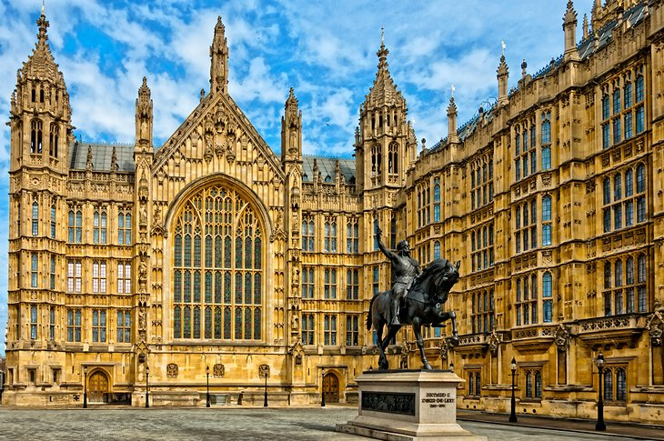
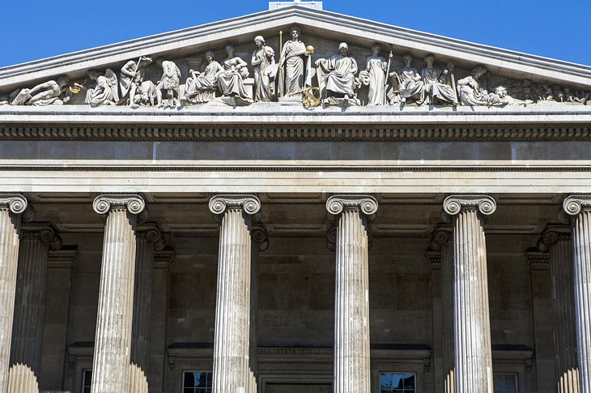

Table of Contents
- Big Ben
- Buckingham Palace
- Tower Bridge
- The British Museum
Big Ben
Nothing screams "London" more emphatically than the 318-foot tower housing the giant clock and its resounding bell known as Big Ben. It's as iconic a landmark as Tower  Bridge, and the tolling of Big Ben is known throughout the world as the time signal of the BBC. Below it, stretching along the Thames, are the Houses of Parliament, seat of Britain's government for many centuries and once the site of the royal Westminster Palace occupied by William the Conqueror.
Buckingham Palace
One of Britain's most iconic buildings, Buckingham Palace is also the scene of London's most popular display of pomp and circumstance, the Changing of the Guard. Drawing crowds at 11:30am regardless of the season, this colorful and free display of precision marching and music also takes place at St. James's
 Palace, after which you can follow the band along The Mall as they march between sites.Buckingham Palace was built in 1837 and has been the London residence of the Royal
Family since Queen Victoria's accession. If you're wondering whether the Queen is in, look at the flagpole atop the building: if the royal standard is flying day and night, she's at home. On special state occasions, she and members of the Royal Family may even emerge on the central balcony.
Palace, after which you can follow the band along The Mall as they march between sites.Buckingham Palace was built in 1837 and has been the London residence of the Royal
Family since Queen Victoria's accession. If you're wondering whether the Queen is in, look at the flagpole atop the building: if the royal standard is flying day and night, she's at home. On special state occasions, she and members of the Royal Family may even emerge on the central balcony.
Tower Bridge
Tower Bridge is one of London's best-known landmarks (fascinating behind-the-scenes tours are available). Walk across for the best Tower views, as well as a glimpse of London Bridge (which many mistakenly believe Tower Bridge to be) in the distance farther along the Thames. At the south side of the bridge, you'll find Butler's Wharf, a funky section of town boasting multiple restaurants.The adjacent Tower of London has fulfilled many different roles over the centuries. One of Britain's most iconic structures, this spectacular World Heritage Site offers hours of fascination for visitors curious about the country's rich history - after all, so much of it happened here. Inside the massive White Tower, built in 1078 by William the Conqueror, is the 17th-century Line of Kings with its remarkable displays of royal armaments and armor.
The British Museum
Displaying one of the world's finest collections of antiquities, the British Museum contains more than 13 million artifacts from the ancient world. With priceless objects from Assyria, Babylonia, China, Europe, and elsewhere, it's hard to know where to begin in this expansive attraction. Most tourists head first for the museum's most famous exhibits: the controversial Elgin Marbles from the Parthenon, the Rosetta Stone, the colossal bust of Ramesses II, the  Egyptian mummies, and the spectacular hoard of 4th-century Roman silver known as the Mildenhall Treasure. In addition to a well-stocked, on-site bookshop boasting an exhaustive array of titles on ancient history, archaeology and art history, there's a shop selling kids' games and souvenirs, along with one that sells replica sculptures and jewelry.